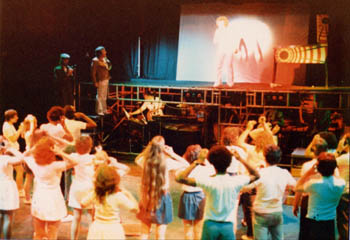
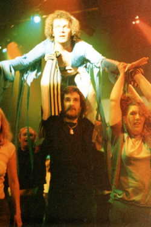

Chapter 11. Tommy at the Royal Exchange
 The date was Monday, July 17th 1978 and to say that we were a success is putting it mildly. Everything went as it always should have done, but hadn't previously. Everyone in the audience loved it. We sold out within days of the tickets going on sale, the box-office having a further 1700 enquiries for tickets. We got the best write-up of the entire fortnight (see below). Natalie Anglesey said to me that it was even better than Demolition Man and to Graham that it was the best show, amateur or professional, she had seen for ages and finally she said to Chris Fogg that it was the best stage show she had ever seen. Not bad eh?
To cap it all we got two encores, thunderous applause, a standing ovation... but the jinx still followed us, for Amanda broke her toe in 'The Acid Queen'. But what a night! We felt our reputation was considerably increased as a result.
Here is Tom Wildern's critique of the night printed on Friday July 18th 1978 in the Manchester Evening News.
 YOUTH'S TOMMY IS JUST TERRIFIC
"Youth, with Tommy had the privilege of opening the Second Amateur Theatre Festival at Manchester's Royal Exchange Theatre.
They did it with a descriptive prologue that was a sock in the eye one moment, and drained our emotions the next.
Producer Chris Fogg released such a salvo of lighting and sound effects that he had 90% of his around 30-year-old audience on their feet in ecstasy. The other tenth of around 50s were stunned into silent contemplation. Outside the queue of people waiting in the hope of getting return tickets must have been wondering just what they were missing.
Genesis Theatre proceeded to give us their idea of the shape of theatre to come by unfolding the tragic-comedy story of the deaf blind and dumb Tommy with surprising clarity since there was no spoken dialogue, and movement mime and dance were the principal media.
Perhaps Chris brought in the artillery too soon. He couldn't hope to maintain the opening tempo, but it was surprising how long he did. For this he had to thank the dedication of a cast who were never less than flat out.
Apart from feeling deeply for Nicky Baird, kicked around the stage as the hapless Tommy, this was a team effort at total commitment that will set traditional amateur musical theatre thinking."
~ Tom Wildern
It took us all a LONG time to come down after that show, I can tell you!